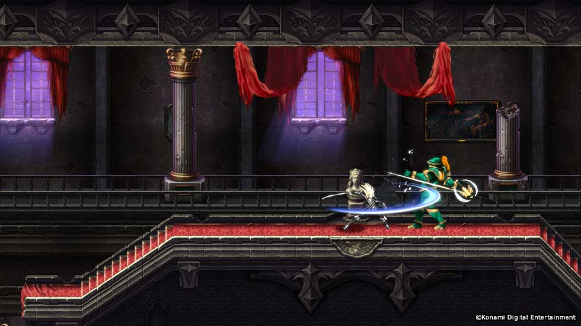
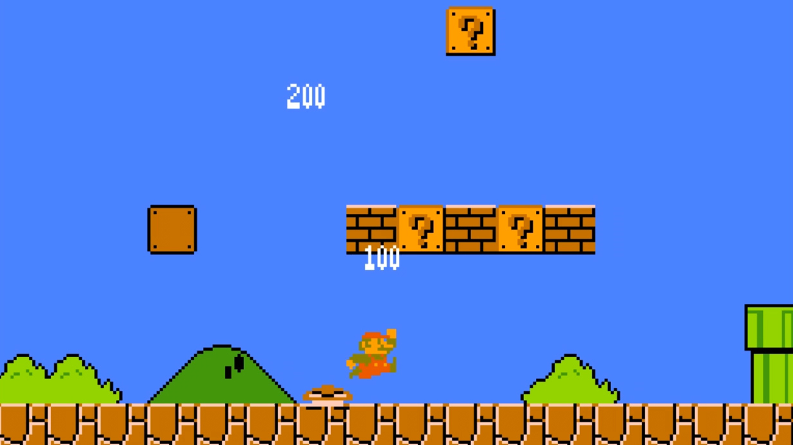
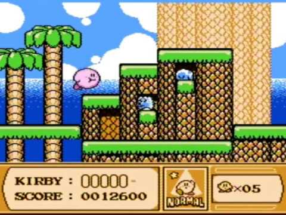
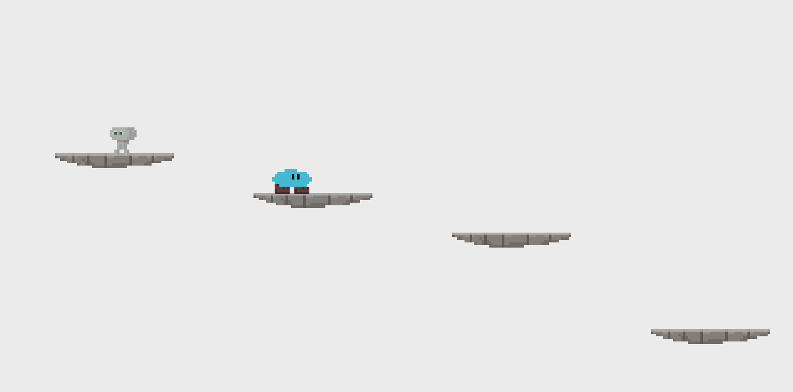

Visual initial sketch of our game project

By Marsoni David the 06/10/2023 at 21:30
Our game is inspired by classic platformer games such as Castlevania, Mario Bros., and Kirby. We wanted to create a game that captured the feel of these classic games, while also adding our own unique twist.
Here are some screenshots of the game's inspiration:



We also created a small test to see if our game was possible. The test was a success, and we are now confident that we can create a full-fledged game.
Here is a screenshot of the test:

This test is cleary here just to simulate the feability of the project and not for showing any definitive ideas for our project.